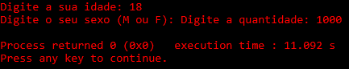
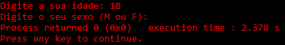

Em ambos os exemplos vemos que a linha do scanf que detectava um
%c
sem o
\n
foi pulada.
Isso acontece porque detecta o último 'enter' que você digitou (no caso o que você deu depois de digitar a idade).